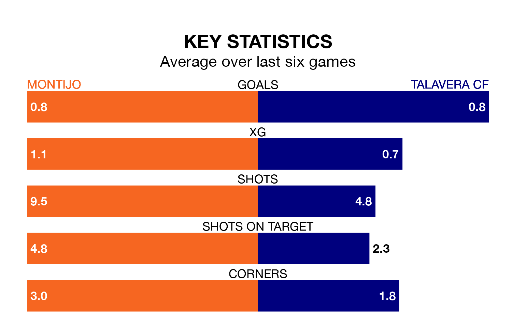

Talavera CF are strong favourites to take all three points despite Montijo's home advantage in Sunday's early match at the Estadio Municipal Emilio Macarro Rodriguez.
*Betting Company* are offering odds of 1.8 on Talavera sealing the win, with the visitors sitting seventh in the Segunda División RFEF Group 5 table.
Montijo, who are 18th in the league and 19 points behind Talavera, are priced at 4.33 to win. A draw is set at 3.1.
Montijo are in bad form in the Segunda División RFEF Group 5, with one win and five losses from their last six games.
With two wins and two draws over that period, Talavera's form is better – they have taken eight points from 18, compared to the home team's three.
With 24 goals in 28 games so far this season, Montijo are scoring at below the league average rate with 0.9 goals per game. And they are conceding more than average, letting in 46 goals at a rate of 1.6 per game.
The visitors are also below average scorers, with 1.0 goal per game, compared to a league average of 1.1. They have conceded 0.8 goals per game.
Montijo's last match was on Sunday, a 4-1 loss against Ursaria, with Víctor Manuel Castaño Terrazas getting the goal for Montijo.
Talavera beat Gimnástica Segoviana CF 1-0 last time out, also on Sunday.
Updated: 10:31 (UTC), 31/03/24